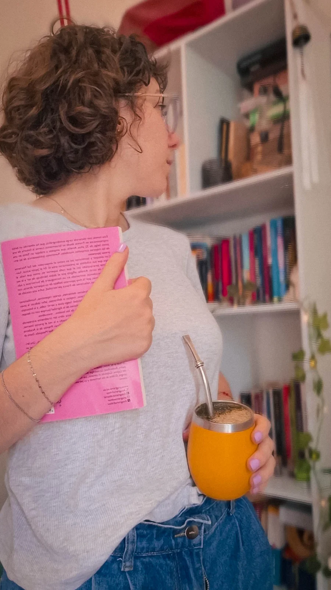

Sobre mi
¡Hola! Mi nombre es Lucía. Soy docente, terapeuta y tejedora de guaridas creativas.
¡Bienvenida a Espacio ALUD!
¿Empezamos el recorrido?

¡Bienvenida a Espacio ALUD!
¿Empezamos el recorrido?
